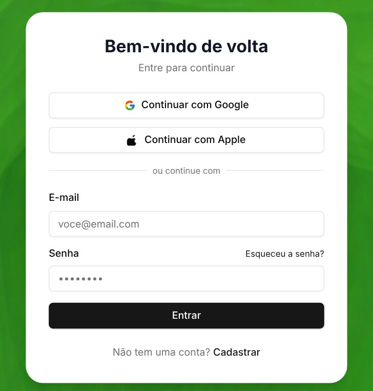
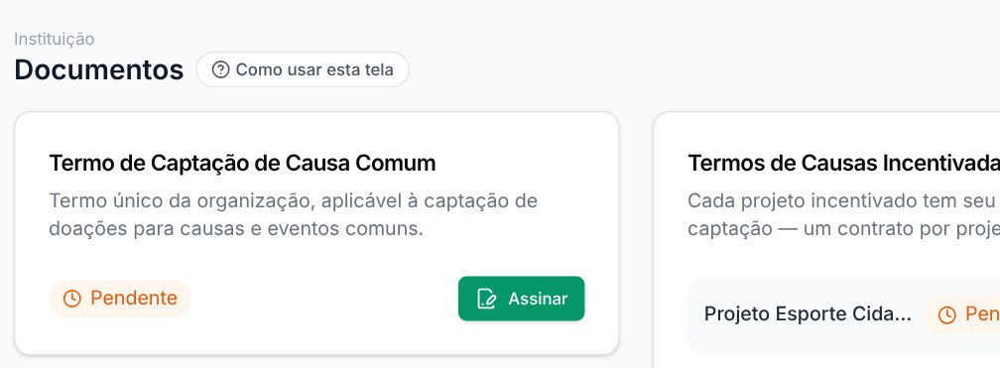
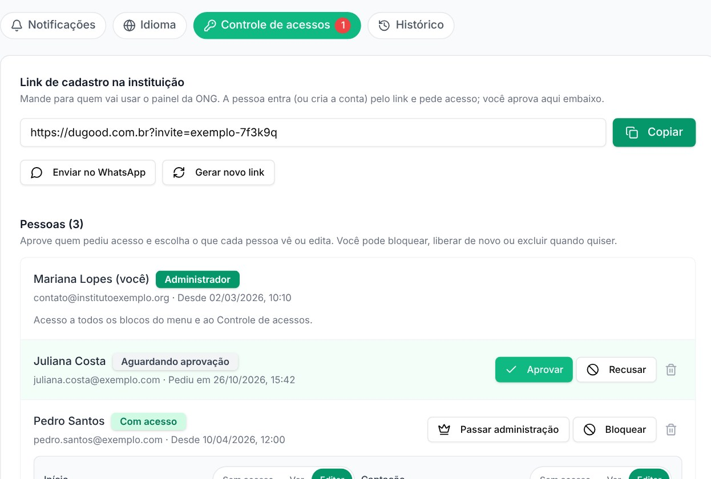
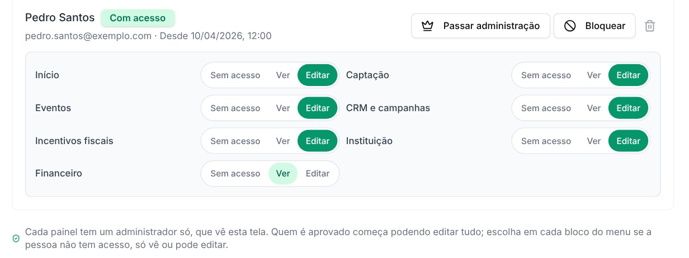
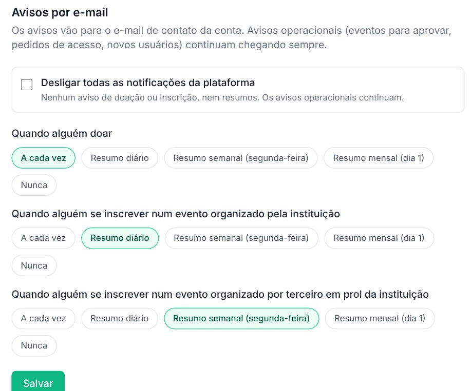
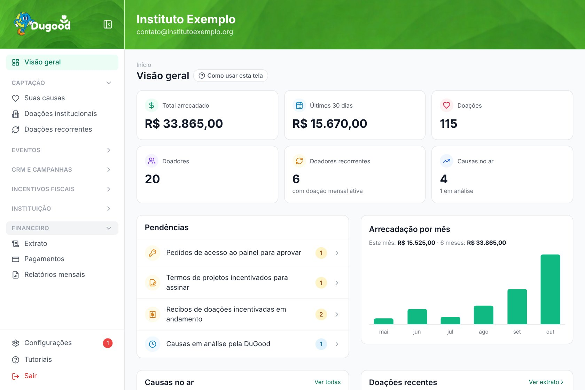
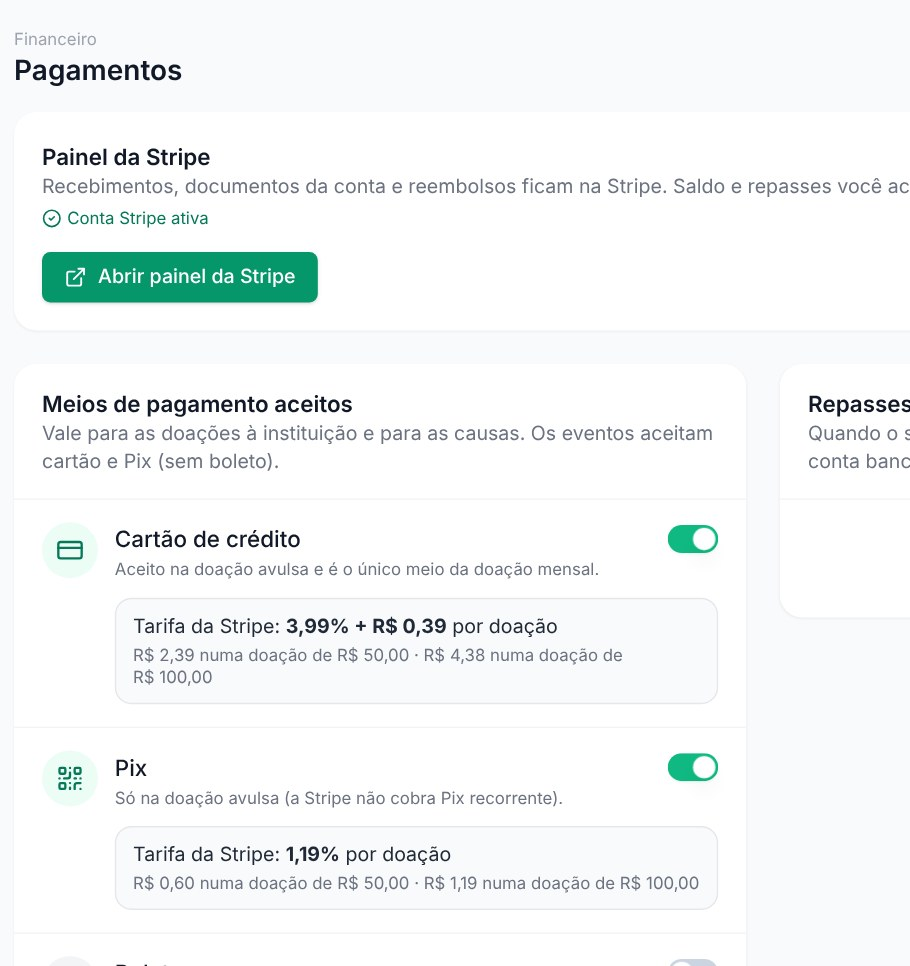
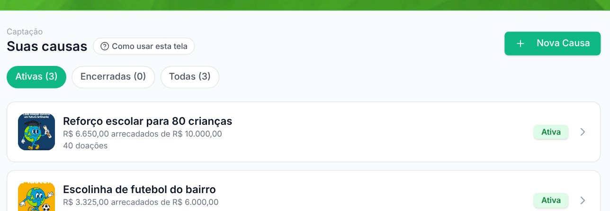

O caminho até a primeira doação
Em poucos passos o painel da instituição fica pronto. Este guia segue a mesma ordem do vídeo tutorial.
- EntrarPelo link de cadastro que a DuGood mandou para a instituição.
- Assinar o termoO contrato de entrada, assinado pela internet (DocuSign).
- Organizar a equipeQuem entra no painel e o que cada pessoa vê ou edita.
- ConfigurarOs avisos por e-mail e o idioma do painel.
- Conhecer o painelO menu, a Visão geral e onde fica cada coisa.
- Começar a captarPerfil, pagamentos e a primeira causa no ar.
Tenha à mão
- O link de cadastro da instituiçãoEnviado pela equipe da DuGood. É por ele que a primeira pessoa entra.
- Acesso ao e-mail da instituiçãoO termo de entrada chega nesse e-mail, e os avisos do painel também.
- O responsável legal da instituiçãoÉ quem assina o termo de entrada.
- Os dados da instituição e a conta bancáriaPara o perfil e para ativar os pagamentos com a Stripe.
A ONG recebe 100% das doações
A DuGood não cobra taxa da instituição nem de quem doa, e as ferramentas do painel são grátis. Só a Stripe, que processa os pagamentos, cobra as tarifas dela, que você vê no painel antes de escolher os meios de pagamento.

Abra o link e entre com a sua conta
- Abra o link de cadastro que a DuGood mandou.
- Entre com Google, Apple ou e-mail e senha.
- Ainda não tem conta? Clique em Cadastrar, informe e-mail, telefone, CPF e senha e digite o código que chega no seu e-mail.
- Pronto: o painel da instituição abre.

Quem entra primeiro vira o administrador
A primeira pessoa que entra pelo link vira o administrador do painel. Quem entra depois pelo mesmo link pede acesso: o administrador recebe um aviso por e-mail e aprova (veja Equipe e Controle de acessos).
Use um e-mail por painel. Uma conta da DuGood fica ligada a um painel só. Se a pessoa já usa o e-mail em outro painel (de outra ONG, de uma loja ou de um organizador de eventos), ela precisa entrar com outro e-mail.

O contrato da instituição com a DuGood
O Termo de Captação de Causa Comum é um termo único da instituição e vale para todas as causas e eventos comuns. Ele é necessário para começar a criar causas e eventos na DuGood.
- No menu, abra Instituição › Documentos e clique em Assinar no Termo de Captação de Causa Comum.
- A DuGood manda um e-mail do DocuSign com o link de assinatura para o e-mail da instituição.
- O responsável legal abre o e-mail, revisa e assina o documento.
- Depois, o termo segue para a assinatura da DuGood. Com as duas assinaturas, o termo assinado fica disponível em Documentos.


Como acompanhar
| Situação no painel | O que significa |
|---|---|
| Pendente | O termo ainda não foi assinado pela instituição. Clique em Assinar para receber o e-mail. |
| Aguardando assinatura da DuGood | A instituição já assinou. Falta só a assinatura do representante legal da DuGood. |
| Assinado | Tudo certo. O termo assinado fica em Instituição › Documentos. |
O e-mail não chegou? Confira a caixa de spam e se o e-mail da instituição está certo em Instituição › Perfil. Se precisar, fale com a DuGood.
Na mesma tela você também pode enviar os documentos institucionais (estatuto, cartão CNPJ, ata). Eles não são obrigatórios para criar causas, mas agilizam a análise da DuGood. Projetos com incentivo fiscal têm um termo próprio, um por projeto, na mesma tela.
Quem entra e o que cada pessoa faz
Fica em Configurações › Controle de acessos (botão Configurações, no rodapé do menu). Só o administrador do painel vê esta aba.

Convidar a equipe
- Clique em Copiar para copiar o link de cadastro da instituição, ou em Enviar no WhatsApp.
- A pessoa entra pelo link (ou cria a conta) e o pedido de acesso aparece para você, com aviso por e-mail.
- Clique em Aprovar ou Recusar. Pedidos pendentes também aparecem nas Pendências da Visão geral.
O que cada pessoa vê ou edita
Quem é aprovado começa podendo editar tudo. Para cada bloco do menu (Início, Captação, Eventos, CRM e campanhas, Incentivos fiscais, Instituição e Financeiro), escolha:
| Nível | O que acontece |
|---|---|
| Sem acesso | O bloco some do menu da pessoa. |
| Ver | A pessoa vê as telas do bloco, com um aviso de que é só para ver, e não consegue salvar nada. |
| Editar | A pessoa vê e muda tudo no bloco. É o padrão. |

Um administrador por painel
- Cada painel tem um administrador só. Ele tem acesso a tudo, vê o Controle de acessos e salva as notificações.
- Para trocar de administrador (por exemplo, quando alguém sai da instituição), use Passar administração ao lado da pessoa.
- Você pode bloquear, liberar de novo ou excluir o acesso de alguém quando quiser.
- Gerar novo link faz o link atual parar de funcionar. Quem já tem acesso continua com acesso.

Avisos por e-mail e idioma
Notificações
Em Configurações › Notificações, escolha como a instituição recebe os avisos por e-mail. Eles vão para o e-mail de contato da instituição, e só o administrador muda essas preferências.
| Aviso | Opções |
|---|---|
| Quando alguém doar | A cada vez, resumo diário, resumo semanal (segunda-feira), resumo mensal (dia 1) ou nunca |
| Inscrição em evento da instituição | |
| Inscrição em evento de terceiro em prol dela |

- Desligar todas as notificações da plataforma corta os avisos de doação e inscrição e os resumos.
- Avisos operacionais, como pedidos de acesso e eventos para aprovar, chegam sempre.
- Sem nada escolhido, vale a cada vez para tudo.
Idioma
Em Configurações › Idioma, cada pessoa escolhe ver o painel em português, inglês ou espanhol. Vale só para quem escolheu, neste e nos outros aparelhos em que entrar.

Tudo no menu, organizado por blocos

| Bloco do menu | O que tem |
|---|---|
| Início | Visão geral: arrecadado, doações, doadores, pendências e arrecadação por mês. |
| Captação | Suas causas, doações institucionais (direto para a instituição) e doações recorrentes (mensais). |
| Eventos | Eventos com inscrição que vira doação, leitura dos ingressos na portaria e como funciona. |
| CRM e campanhas | CRM (calendário, tarefas e réguas de contato), doadores, composição da base, campanhas com link e QR e sorteios e leilões. |
| Incentivos fiscais | Dados fiscais, projetos incentivados, doações incentivadas e recibos. |
| Instituição | Perfil (a página pública da instituição), documentos e o widget para o site. |
| Financeiro | Extrato, pagamentos (Stripe, meios de pagamento e repasses) e relatórios mensais. |
No rodapé do menu ficam Configurações e Tutoriais.
Visão geral
É a primeira tela do painel: os números da instituição, as Pendências (pedidos de acesso, termos para assinar, causas em análise…) e a arrecadação por mês. Comece o dia por ela.
Ficou com dúvida em alguma tela? Clique em Como usar esta tela, ao lado do título: um passo a passo curto mostra o que cada parte faz. Os tutoriais completos ficam em Tutoriais, no menu.

Para começar a receber doações
A Visão geral mostra o que falta. Nesta ordem:
1. Complete o perfil
Em Instituição › Perfil: logo, descrição, endereço, telefone e fotos. É assim que os doadores veem a página da instituição na DuGood.
2. Ative os pagamentos
Em Financeiro › Pagamentos, conecte a conta Stripe da instituição (uma vez só). Sem ela não é possível publicar causas. Na mesma tela:
- escolha os meios de pagamento aceitos (cartão e Pix, e o boleto, se quiser), vendo a tarifa da Stripe de cada um;
- escolha a frequência dos repasses para a conta bancária (diário, semanal, mensal ou sob demanda);
- use Abrir painel da Stripe para ver os recebimentos e trocar a conta bancária.

3. Assine o termo de entrada
Se ainda não assinou, veja a seção 3.
4. Crie a primeira causa
Em Captação › Suas causas, clique em Nova Causa: título, descrição, meta e imagem. Envie para a aprovação da DuGood e, quando for aprovada, ative para ela aparecer no app. Eventos funcionam do mesmo jeito, em Eventos.

5. Divulgue e acompanhe
- Compartilhe o link da causa e use CRM e campanhas › Campanhas para links e QR codes rastreados.
- Coloque a página da instituição no seu site com o Instituição › Widget para o site.
- Acompanhe quem doa em CRM e campanhas › Doadores e o dinheiro em Financeiro › Extrato.
Projetos com incentivo fiscal (Lei Rouanet, FIA, PRONON etc.) usam também Incentivos fiscais › Dados fiscais. Só é preciso preencher se a instituição tiver esses projetos.
Perguntas que sempre aparecem
Quanto a DuGood cobra?
Nada. A DuGood não cobra taxa da instituição nem de quem doa, e as ferramentas do painel são grátis. A Stripe cobra as tarifas dela por pagamento, que aparecem em Financeiro › Pagamentos.
O e-mail do termo não chegou.
Confira a caixa de spam e se o e-mail da instituição está certo em Instituição › Perfil. Se continuar sem chegar, fale com a DuGood, que confere o envio.
Alguém da equipe entrou, mas não vê o painel.
O pedido de acesso precisa ser aprovado pelo administrador em Configurações › Controle de acessos. Se a pessoa já aparece com acesso, confira os blocos dela: um bloco em "Sem acesso" some do menu.
A pessoa que era administradora saiu da instituição.
Se ela ainda consegue entrar, use Passar administração para outra pessoa da equipe. Se não, fale com a DuGood.
O link de cadastro foi parar onde não devia.
Em Controle de acessos, clique em Gerar novo link. O antigo para de funcionar, e quem já tem acesso continua com acesso. Pedidos de quem você não conhece podem ser recusados.
Por que minha causa ainda não aparece no app?
Toda causa passa pela análise da DuGood. Enquanto isso, ela fica "Em análise" na Visão geral. Depois de aprovada, falta ativar. Para publicar, o perfil precisa estar completo e os pagamentos ativados.

Conte com a gente
Fale com a DuGood: comercial@dugood.com.br · WhatsApp (11) 99429-9400